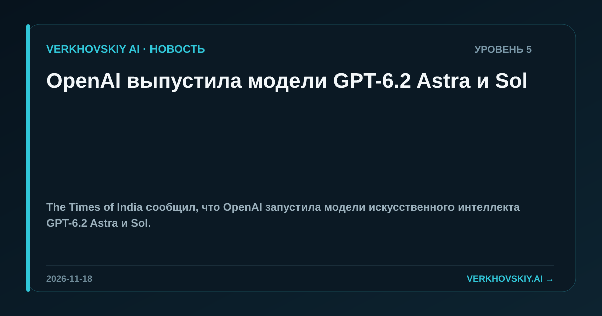

OpenAI выпустила модели GPT-6.2 Astra и Sol
The Times of India сообщил, что OpenAI запустила модели искусственного интеллекта GPT-6.2 Astra и Sol.

The Times of India сообщил, что OpenAI запустила модели искусственного интеллекта GPT-6.2 Astra и Sol.